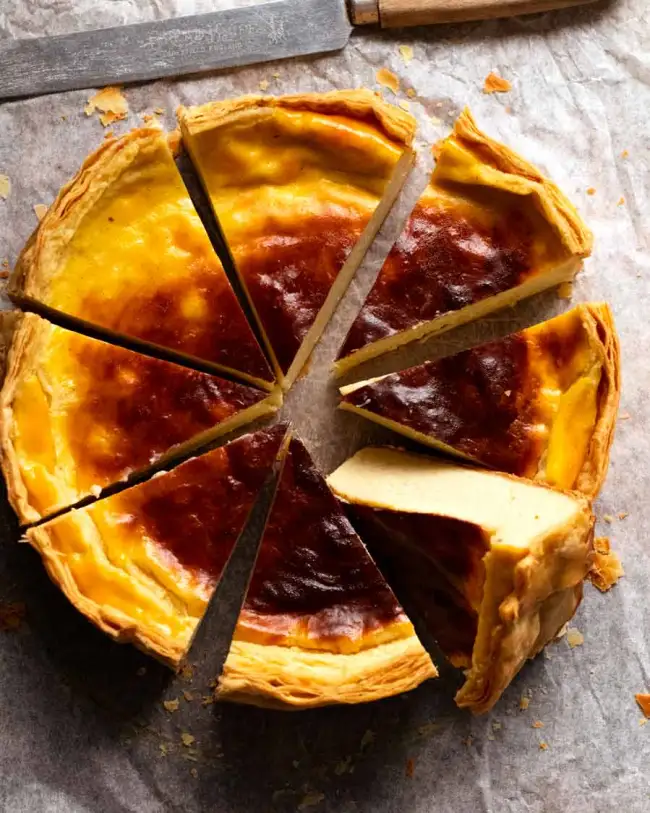

French Custard Tart

Introducing the world's greatest custard tart:
Flan Patissier! Also known as Parisian Flan.
It's a flaky pastry crust filled with a wicked amount of creamy
and rich vanilla custard that glows with a gorgeous bronze sheen
after baking.
To say this thing is magnificent would be the understatement
of the year. Words fail me. It's that good!
Ingredients
- Eggs
- Cornflour/cornstarch
- Vanilla beans
- Sugar
- Milk
- Butter
Steps
- Heat Milk with 1/4 cup of sugar, vanilla seeds ad leftover vanilla pods. Bring it to just below a boil. As soon as you see the milk starting to foam and rise, remove it straight from the stove
- Infuse - Place the lid on (to prevent a skin from forming and loss of volume through evaporation) and leave for 10 minutes. This gives the milk time to be infused with the vanilla flavour as well as to cool slightly which eliminates any risk of hot milk accidentally scrambling the eggs in the next steps.
- Eggs and cornflour (cornstarch) - Whisk the egg yolks, whole egg and sugar together until combined. The whisk the cornflour in. It's best to whisk eggs and sugar first before adding cornflour else you end up with a flurry of flour!
- Slowly add half milk (tempering) - While whisking, slowly pour in half the milk. Just whisk until combined.
- Thicken custard on stove - Pour the egg/milk mixture into the saucepan with the remaining hot milk mixture. Then place it on the medium-low stove, whisking constantly but leisurely, to ensure the base doesn't catch.
- Big lazy bubbles - Once the custard starts thickening, the next thing you are looking for is big, fat lazy bubbles popping up on the surface which indicates the custard is thick enough.
- 20 seconds whisking - Once you see the lazy bubbles, keep whisking for another 20 seconds on the stove, then remove it from the heat.
- Thick and creamy custard! it should leave ribbons on the surface when drizzled but still be pourable.
- Enrich with butter - This is FRENCH custard tart, so it should come as no surprise that we're sneaking some butter in here to enrich the custard!
- Strain - Pass the custard through a fine mesh strainer. This is to remove any larger chunks of vanilla that were loosened from the beans.
- Press through all the custard and be sure the srape the base of the strainer well.